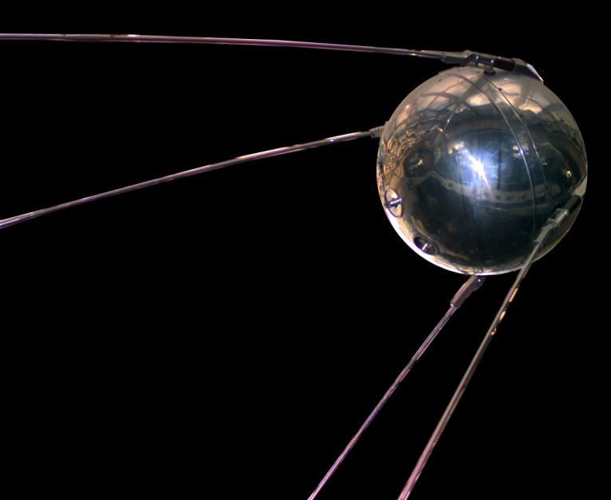
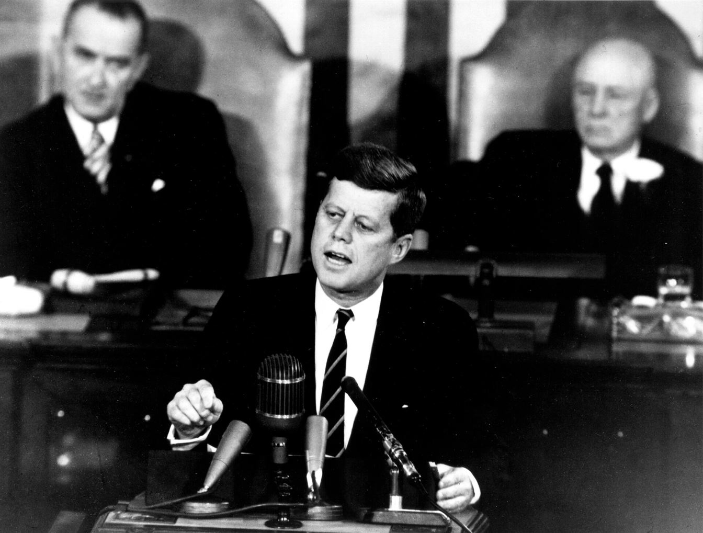
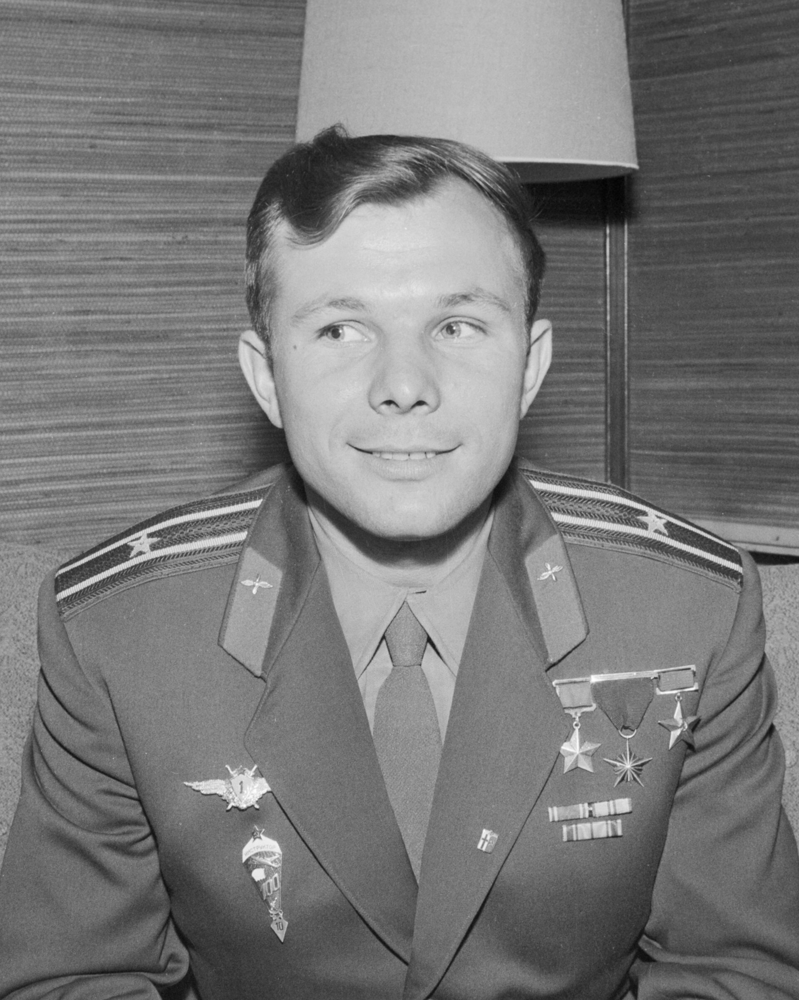

Between 1957 and 1969, two superpowers raced to space. The Soviet Union started almost every lap in front. But in 1961 President Kennedy changed the finish line to something only one side was ready to attempt: "before this decade is out, of landing a man on the Moon and returning him safely to the Earth."

Blue marks the United States Orange marks the Soviet Union. Colored dots are the only color coding — all text stays readable.
The race, first by first

An 83.8 kg metal ball beeping from orbit. The beep was heard worldwide, and the race was on.
Laika, a stray dog from Moscow, became the first living being to orbit Earth. There was no way to bring her back — something the world was not told at the time.
America's answer, launched by a team led by Wernher von Braun — carrying James Van Allen's Geiger counter, which discovered the radiation belts that now bear his name.
The first human-made object to reach another world, impacting the Moon on 14 September (Moscow time).
Humanity saw the back of the Moon for the first time — through a Soviet camera.
Yuri Gagarin completes one orbit in 108 minutes and becomes the most famous man on Earth.
Alan Shepard's 15-minute suborbital flight. Three weeks behind Gagarin, and not yet in orbit — the gap was painful.
In a speech to Congress, the President commits the US to landing a man on the Moon within the decade — a goal that required inventing almost everything needed to do it.
John Glenn circles the Earth three times. America is finally in the game.
Valentina Tereshkova, a former textile worker and parachutist, flies 48 orbits.
Three cosmonauts squeezed into a cabin built for one — without spacesuits and without an escape system. Brave, but risky.
Alexei Leonov floats outside for 12 minutes — and nearly cannot get back in, his suit inflated stiff in the vacuum. An emergency air-dump saved him.
Ed White spends 23 minutes outside — and famously does not want to come back in.
Two American spacecraft meet in orbit for the first time — a skill without which a Moon landing is impossible.
The first photos ever taken from the lunar surface come from a Soviet probe.
Neil Armstrong docks with an Agena target — and minutes later saves his mission from a violent spin.
Borman, Lovell and Anders see Earthrise with their own eyes. The finish line is in sight.
The race Kennedy defined is won. The full story here.
Why the Soviets kept winning early
The early Soviet lead was not luck — it was hardware. The Soviet Union built its first rockets by scaling up the R-7, a military intercontinental missile with far more thrust than anything the Americans had in the 1950s. While American rockets like the Redstone and Atlas started small and grew cautiously, the R-7 could throw a tonne into orbit from day one — which is why Sputnik, Laika, Gagarin and Tereshkova all rode variants of the same design. The Americans answered with speed and money: the Mercury program, then Gemini's relentless mission cadence — ten crewed flights in twenty months — while the Soviet program, by contrast, flew less often and hid its failures, which multiplied quietly behind the wall of state secrecy.
The race in numbers
The scoreboard

The price paid
The race killed people on both sides. The names belong on every scoreboard:
| Date | Mission | Crew | What happened |
|---|---|---|---|
| 27 January 1967 | Apollo 1 (USA) | Grissom, White, Chaffee | Fire in the capsule during a ground test |
| 24 April 1967 | Soyuz 1 (USSR) | Vladimir Komarov | Parachute failure on landing — the first in-flight spaceflight fatality |
| 30 June 1971 | Soyuz 11 (USSR) | Dobrovolsky, Volkov, Patsayev | Capsule depressurised on the way home from the Salyut 1 station |
So — who won?
The honest answer is that it depends which race you mean.
The USSR won the race of firsts. First satellite, first animal, first human, first woman, first spacewalk, first probe on the Moon, first space station. For years, the Soviets led every lap, and their early achievements still read like a list of everything spaceflight is about.
The USA won the race that was finally agreed on. Kennedy defined the finish line in 1961: land a man on the Moon and bring him back before 1970. Apollo 8 orbited the Moon in December 1968; Apollo 11 landed in July 1969. The USSR never landed anyone — its N-1 Moon rocket failed four times out of four. Why, is a story of its own.
Most historians score it as an American victory on the Moon — while crediting the USSR with the early lead, and with the more durable program afterwards: the Soyuz spacecraft and the first space stations. The race, in the end, had two winners who were never really racing the same course.
← Back to Space chapter